Umbra
Bazar
Sobre nós
Por muito tempo procuramos por uma marca que agradasse a nossos gostos por item decêntricos e sombrios cansados de nossa busca incessante sem resultados decidimos criar uma marca para pessoas que tivessem uma visão como a nossa uma apreciação pelo bizarro e assim surgiu a Umbra bazar.
O propósito de Nossa marca é proporcionar peças artísticas que fujam do padrão e do Fast fashion entrando em um nicho procurado por pessoas que apreciam macabro e o diferente queremos compartilhar nosso preço pelo obscuro trazendo uma nova visão para coisas diárias e objetos cotidianos.
Tendo em mente que nossa marca representa o apreço por um nicho alternativo prezamos principalmente pelo direito e respeito pela identidade de cada indivíduo e apoiamos causas sociais que lutam contra preconceitos, nossa marca também apresenta valores de sustentabilidade e exclusividade de produtos, já que os mesmo sao feitos artesanalmente em encomenda por uma seleção de artistas
Umbra anthology: Além de uma marca, somos uma coleção de arte, compostos de uma seleção de produtos para vendas, e também de uma coleção de mostra de arte, seja em formato artesanal, digital, audiovisual e muitos outros